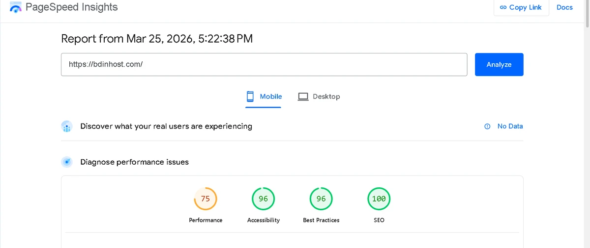
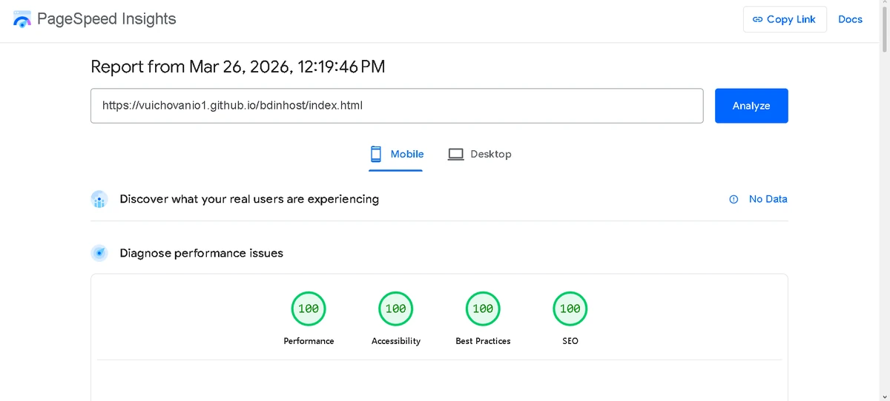

Миграция от WordPress към HTML: цена, стъпки и как да запазиш SEO
Време за четене: ~8 минути
📅 Публикувано: • От: MOVER Studio
WordPress сайтът ти е бавен, чуплив или скъп за поддръжка? Миграция към HTML премахва базата данни, плъгините и риска от хак — и често вдига PageSpeed от 40–60 на 95–100.
Типична миграция WordPress → HTML при нас: 200–500€ — съдържание, SEO и 301 пренасочвания.
Стъпка по стъпка: какво се случва, какво запазваш от SEO, и измерим пример от тестова WordPress vs HTML среда.
Бърз отговор: Миграция 200–500€ според обхвата: експорт на съдържание, HTML реализация, 301 redirects, schema. Нов сайт от нула: от 400€. Виж алтернатива на WordPress.
Защо фирми мигрират от WordPress към HTML
- PageSpeed и Core Web Vitals — по-добри за SEO и реклами
- Нулеви месечни такси за плъгини и „поддръжка на CMS“
- По-малка повърхност за атака (няма wp-admin, няма DB)
- Предвидими разходи: платено веднъж + 23–48€/година хостинг
Не мигрираш, ако публикуваш ежедневно блог с много автори — тогава CMS има смисъл. За brochure сайт с рядки промени HTML е по-логичен.
Стъпки на миграцията
- Одит — URL-и, съдържание, форми, интеграции
- Карта на пренасочванията — стар URL → нов URL (1:1)
- HTML изработка — същият дизайн или редизайн
- 301 redirects — в .htaccess или сървърна конфигурация
- Тест — PageSpeed, Search Console, форми
- Пускане — превключване на DNS или replace на файлове
Процесът ни: как работим
Как запазваш SEO при миграция
Най-честата грешка: нови URL без 301 от старите. Google губи сигнал; позициите падат.
- Запази slug-овете, където е възможно
- 301 redirect за всяка променена URL
- Пренеси title, meta, canonical, schema
- Подай обновен sitemap в Google Search Console
Колко струва миграция WordPress → HTML
| Обхват | Цена | Включено |
|---|---|---|
| Малък сайт (до 5 стр.) | 200–300€ | Съдържание, redirects, schema |
| Среден (5–15 стр.) | 300–500€ | + multi-location карта |
| Нов сайт от нула (вместо миграция) | 400€+ | Пълен пакет визитка/корпоративен |
Измерим пример: WordPress vs HTML (PageSpeed)
В тестова среда същата концепция е пусната като WordPress и като чист HTML — с ясна разлика в PageSpeed и structured data.


Контекст: case studies · BDinHost
Следваща стъпка
Готов ли си да мигрираш от WordPress? Изпрати URL на текущия сайт — ще дадем ориентир за цена и срок.
Често задавани въпроси
Колко струва миграция от WordPress към HTML?
Обикновено 200–500€ според броя страници и сложността на redirects.
Ще загубя ли позициите в Google?
Не, ако 301 redirects са правилни и съдържанието е еквивалентно. Проследявай Search Console 2–4 седмици.
Колко време отнема?
5–14 работни дни според обхвата — паралелно с изработка на HTML версията.
Мога ли да редактирам съдържанието след това?
Да — чрез управлявани ъпдейти от нашия екип (ти изпращаш, ние публикуваме). Типичен SLA: 24 часа.
Какво става с блога в WordPress?
Статичните статии могат да станат HTML страници; активен ежедневен блог е по-подходящ за CMS — казваме честно, ако не е fit.
Накратко: Миграция WordPress → HTML запазва SEO с 301, вдига скоростта и спира CMS разходите. 200–500€ типично за съществуващ малък/среден сайт.